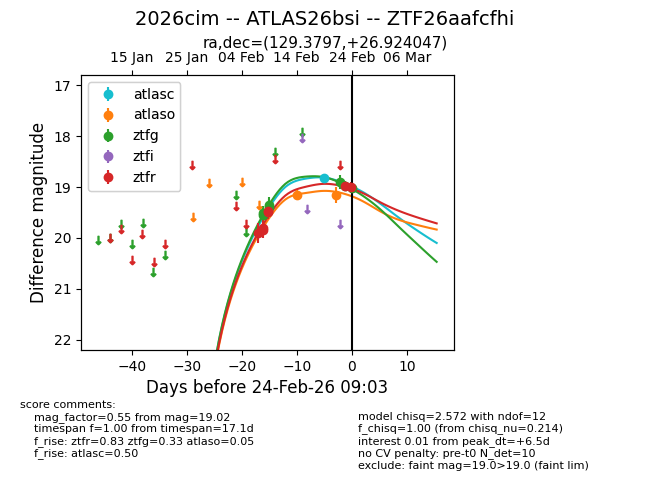
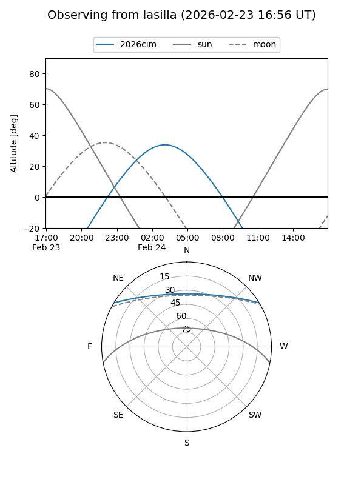
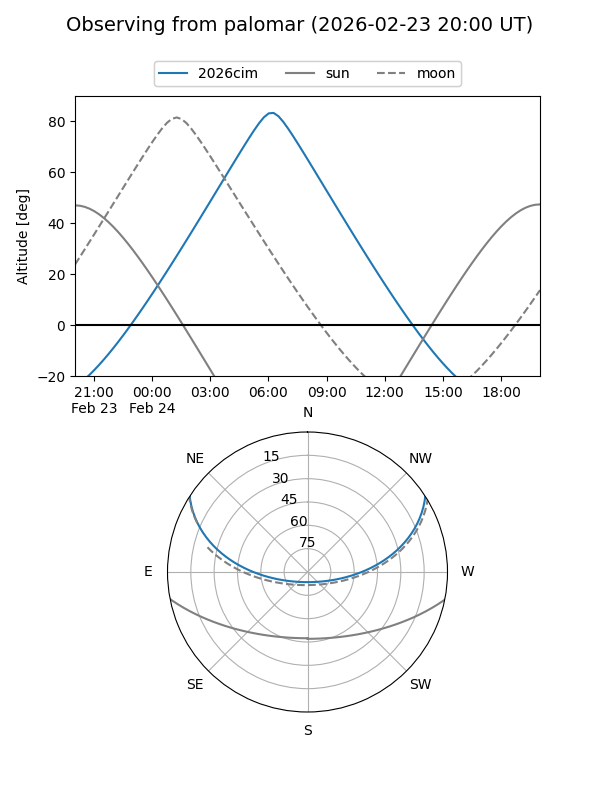
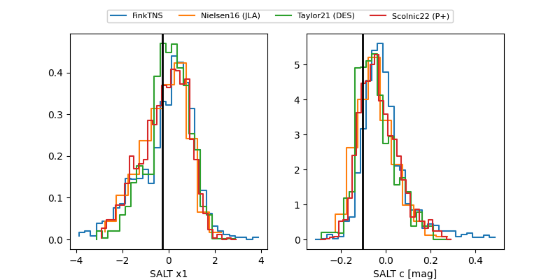

2026cim
Target 2026cim at 2026-02-24 09:08
Aliases and brokers:
FINK: link
Lasair: link
ALeRCE: link
TNS: link
YSE: link
alt names
ZTF26aafcfhi (ztf,fink_ztf)
2026cim (tns,yse)
ATLAS26bsi (atlas)
Coordinates:
equatorial (ra, dec) = 129.3797,+26.92405
equatorial (HMS+DMS) = 08:37:31.13,+26:55:26.57
galactic (l, b) = (197.4177,+34.11053)
Flags:
Photometry:
last atlasc=18.82, atlaso=19.16, ztfg=19.02, ztfr=19.01
1 atlasc, 2 atlaso, 7 ztfg, 7 ztfr detections
Lightcurve

Visibility


Additional plots
